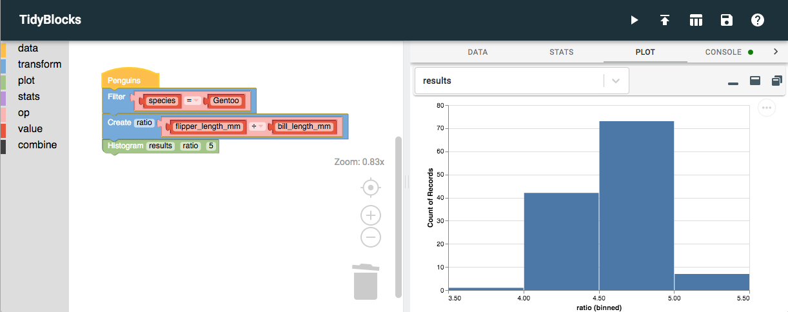

Whatever Happened to TidyBlocks?
TidyBlocks is a Scratch-like tool for doing basic data science. Originally built by Maya Gans, it was overhauled in 2020, after which several volunteers translated its interface into several different (human) languages. We were excited by its potential, but:
-
We had reached the limits of what the Blockly toolkit could do without some serious extension work. (In particular, there’s no comprehensible way to represent joins using the available styles of blocks.)
-
Nobody was willing to fund further development. The overhaul in 2020 took about 300-400 hours of volunteer time; while I would have liked to continue, I didn’t see a way forward without fixing #1 above, and that couldn’t be done without financial support.
I still think the idea is a good one: the user testing we did showed that the interface is immediately comprehensible to anyone who has used Scratch (which these days means most middle school kids and their teachers), and after watching my daughter plod through their school’s “data literacy” module, I think we need something better. I hope someone, some day, will find a way to make it happen.
